Full beauty studio
Your best day. Still you.
Skin, makeup, hair, photo fixes, video and filters in one private studio, almost all of it our own code. Anything sent to YouCam asks you first.
Featured · YouCam Skin AI
Skin Moment: what's your skin moment?
Before you buy, after a breakout, or when you wonder if a product is working: YouCam Skin Analysis measures your skin, with your consent, and you get one plan for what to do next.
Quick actions
Everything in Beljour
Every tool, in one place
120 built features in 10 groups, 120 of them on a screen you can open now, and 61 filters. Listed from the feature registry; nothing unbuilt is shown.
Age & identity
8 built
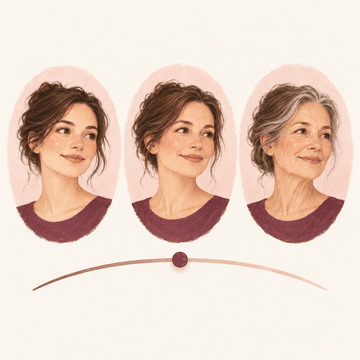
Age progression slider to any age
See yourself a few steps younger or older on one slider.
Open in the Studio: Older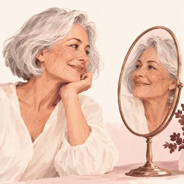
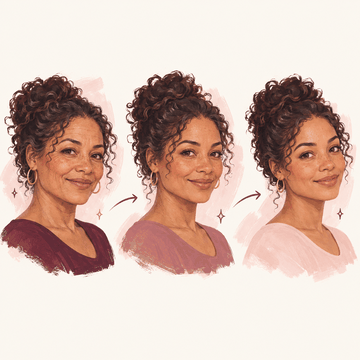
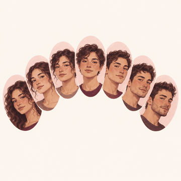
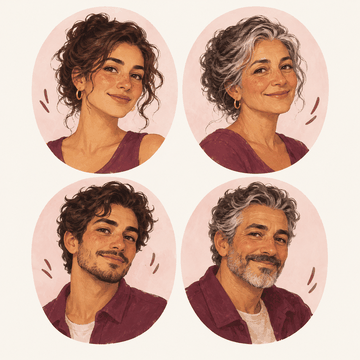
Gender swap + age
Combine a gender appearance with older or younger on the same photo.
Open in the Studio: Gender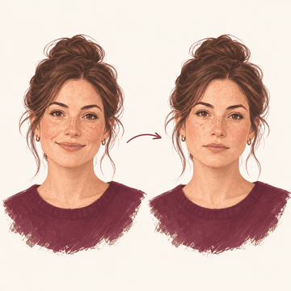
Serious / neutral expression
Turn a closed-mouth smile into a calm, neutral expression.
Open Photo lab: PreviewsStarts at the photo step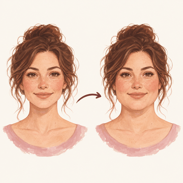
Weight gain sim
Preview a fuller face shape; nothing about your body is changed or predicted.
Open Photo lab: PreviewsStarts at the photo step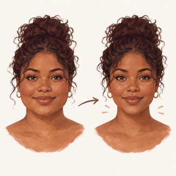
Weight loss sim
Preview a slimmer face shape, opt-in; nothing about your body is changed or predicted.
Open Photo lab: PreviewsStarts at the photo step
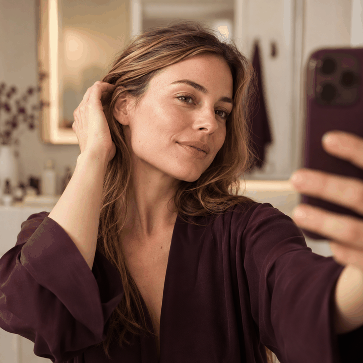
Hair & beard
11 built

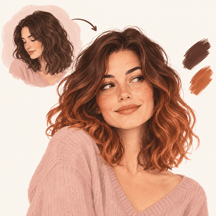
Hair colour with realistic roots
Try a new hair colour or ombre through YouCam with your consent, or recolour on your device and keep your curls.
Open in the Studio: Hair colour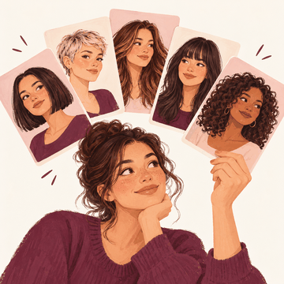
Hair style library
Browse 73 haircut references and try a style through YouCam with your consent.
Open in the Studio: Hair style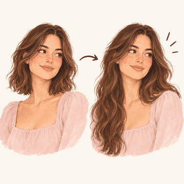
Long hair add
Try longer hair through YouCam, with your consent.
Open Photo lab: HairStarts at the photo step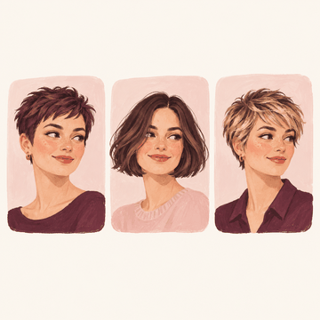
Short / bob / pixie
Try short sides, a pixie, a bob, a crop, a fringe or layers.
Open Photo lab: HairStarts at the photo step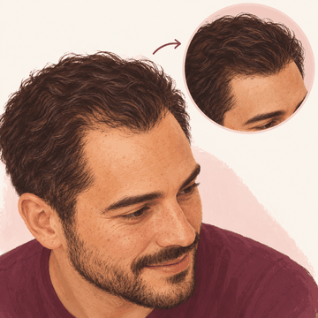
Hairline correction
Add the look of fuller hair with hair fibres, keeping the hairline you mark.
Open in the Studio: Hair fibres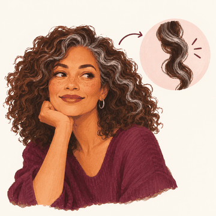
Grey add
Add grey only inside the hair you mark, opt-in.
Open Photo lab: PreviewsStarts at the photo step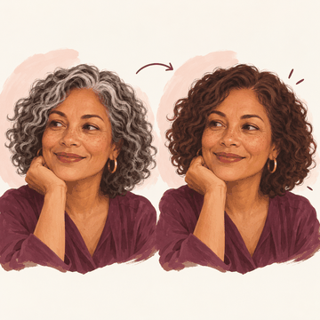
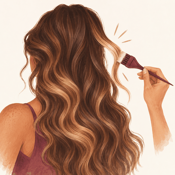
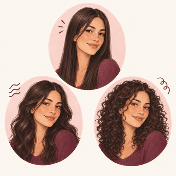
Curly / straight / wavy texture
Try curly, wavy or straighter hair through YouCam, with your consent.
Open Photo lab: HairStarts at the photo step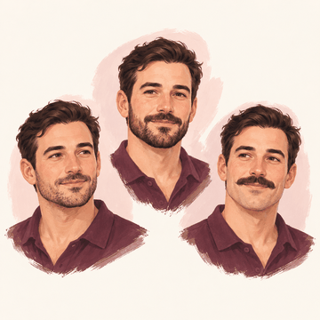
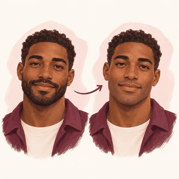
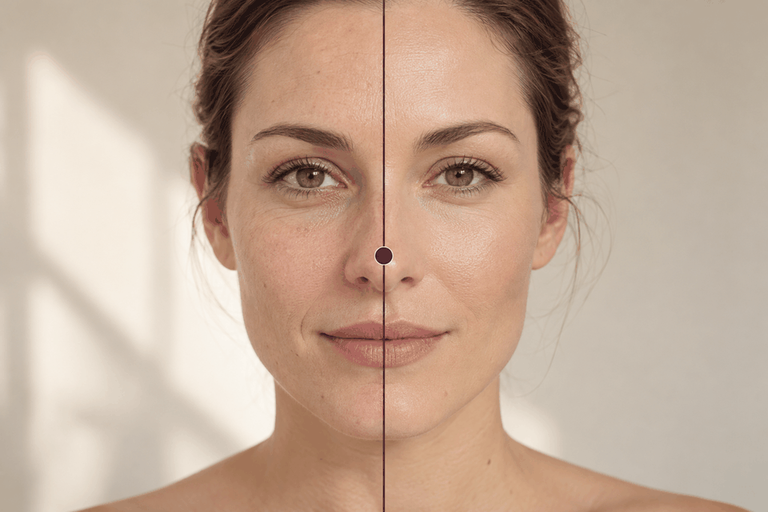
Beauty, skin & makeup
31 built

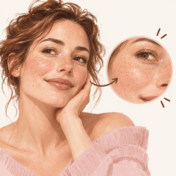
Texture-preserving smooth
Smooth your skin while keeping its texture, pores and marks.
Open in the Studio: Portrait looks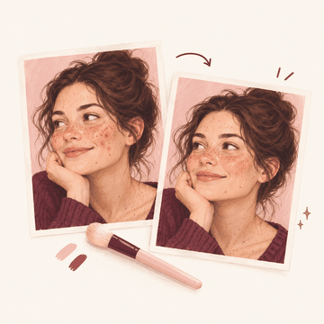
Blemish / acne removal
Heal blemishes you choose; moles and freckles stay unless you tap them.
Open Photo lab: SkinStarts at the photo step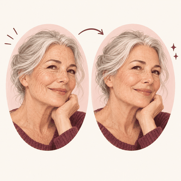
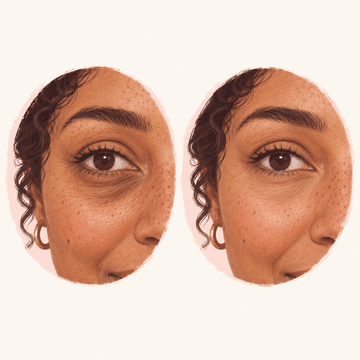
Dark circles / eye bags
Brighten dark circles toward your own cheek colour, never past it.
Open in the Studio: Under-eye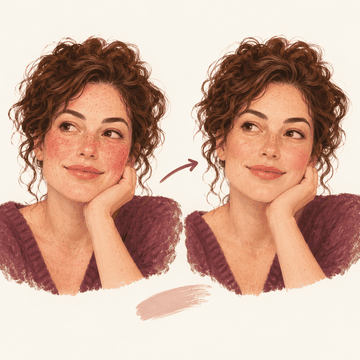
Tone evening and redness
Even out redness and blotches without ever making your skin lighter.
Open in the Studio: Skin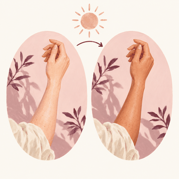
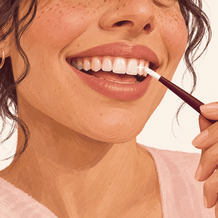
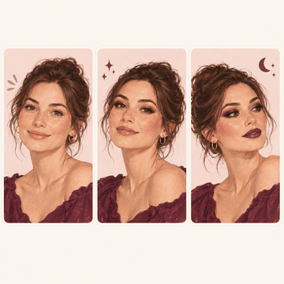
Full makeup looks natural / glam / evening
Try natural, glam or evening makeup through YouCam, with your consent.
Open in the Studio: Makeup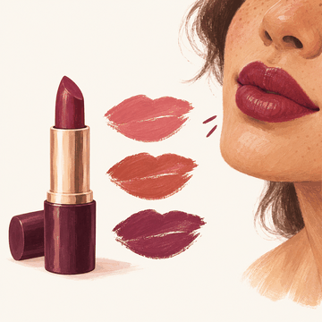
Lipstick true shades
Try lip shades through YouCam, with your consent.
Open Photo lab: MakeupStarts at the photo step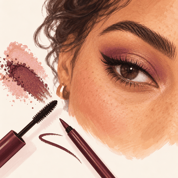
Eyeshadow / eyeliner / mascara
Try eyeshadow, eyeliner and mascara, together or one at a time.
Open Eyes and brows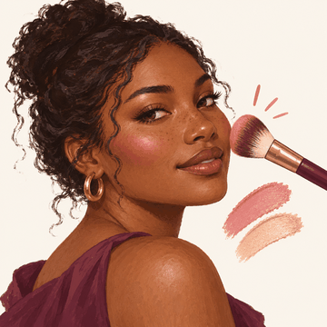
Blush / contour / highlighter
Try blush through YouCam, with your consent.
Open Photo lab: MakeupStarts at the photo step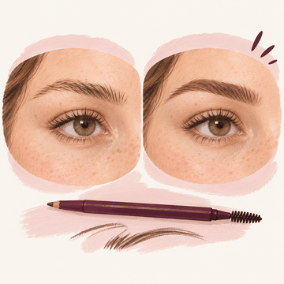
Eyebrow reshape and tint
Preview a new brow shape (opt-in) or tint your brows.
Open Photo lab: PreviewsStarts at the photo step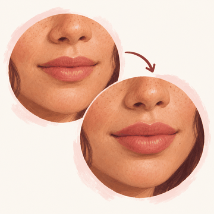
Lip size and shape
Preview fuller or reshaped lips, opt-in.
Open Photo lab: PreviewsStarts at the photo step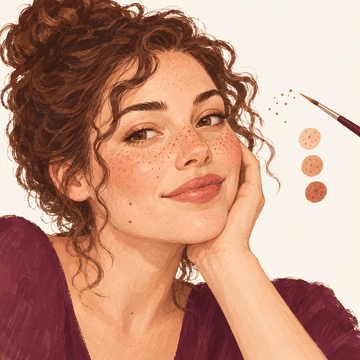
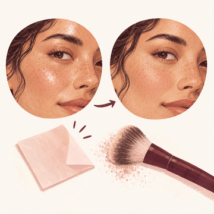
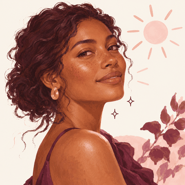
Skin glow (Cassis, Collioure)
Add a glow where light already falls, without lightening your skin.
Open in the Studio: Skin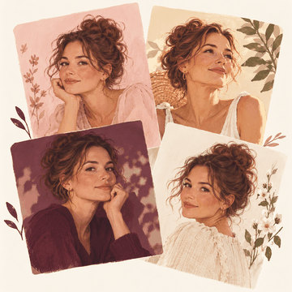
Named portrait looks (Lourmarin to Vence)
Try one of thirteen one-tap portrait looks; none lightens your skin.
Open in the Studio: Portrait looks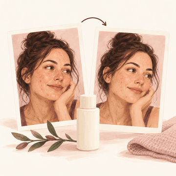
Skin check-in: is my product working
Compare two skin check-ins kept on your device and see what really changed.
Open Is it working?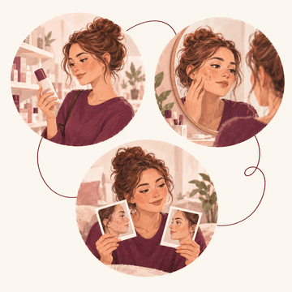
Skin Moment: before I buy, after a breakout, is it working
Pick your skin moment and get your measured scores and one plan, with YouCam Skin Analysis and your consent.
Open Skin Moment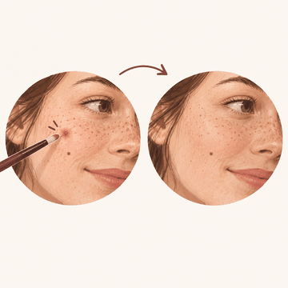
Heal brush: tap or paint a spot
Tap or paint over a spot and it is filled from the skin around it; marks you don't paint stay.
Open in the Studio: Heal brush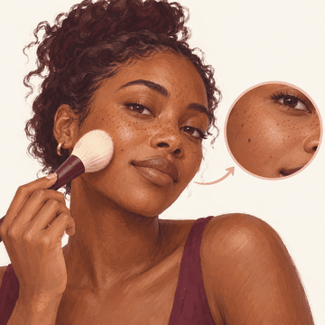
Smooth brush, texture kept
Paint over skin to smooth it; texture stays and moles and freckles are held.
Open in the Studio: Smooth brush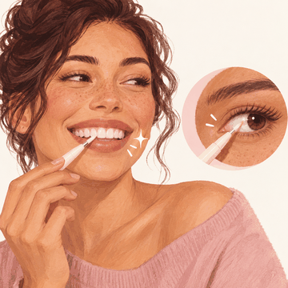
Whiten brush for teeth and eye whites
Paint over teeth or eye whites for a few shades whiter, never past a natural cap.
Open in the Studio: Whiten brush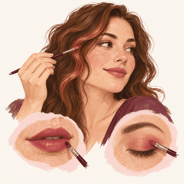
Colour brush for hair and makeup
Paint a colour onto hair, lips or lids; your own light and shade stay and nothing gets lighter.
Open in the Studio: Colour brush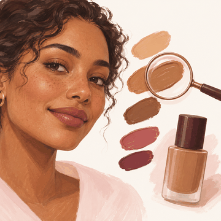
Skin tone reading for the shade (Skin Moment)
Before you buy, YouCam reads your skin and lip colour so the shade starts from you, never lighter.
Open Skin Moment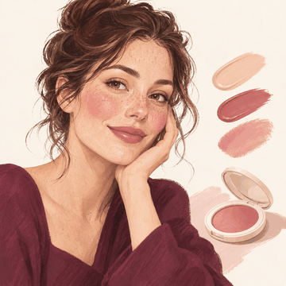
Full-look makeup try-on in her colours (Skin Moment)
See the full look on your own photo: your matched base, a lip colour and a blush picked for your colouring.
Open Skin Moment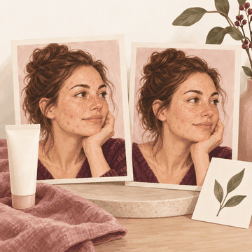
Skin preview of the breakout plan (Skin Moment)
After a breakout, see your own photo with the plan's concerns softened, not erased. A simulation, not a promise.
Open Skin MomentMorning and night routine (Skin Moment)
Tick off your morning and night routine, built from your Skin Moment plan; a missed day is just missed.
Open Your skin todayProduct diary: is it working while you use it
Note when you start a product and see what changed in your check-ins while you used it, never claimed as the cause.
Open the product diaryTen-second skin log
Log how your skin feels in one tap and see the week as plain counts; a stinging patch test says when to stop.
Open the skin logSkin reminders she sets
Switch on reminders for sunscreen, exfoliant nights and your next check-in; all off until you choose.
Open remindersWhat's new in beauty: new ingredients and product types, no brands
See new skincare ingredients and product types, what they do and where they're found, with sources and no brands.
Open What's new
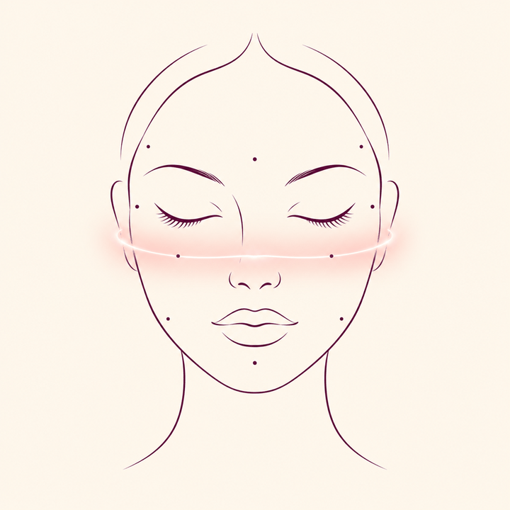
Face shape & expression
11 built

Face slim and jawline
Preview a slimmer face or jawline, opt-in.
Open Photo lab: PreviewsStarts at the photo stepNose reshape preview
Preview a different nose shape, opt-in.
Open Photo lab: PreviewsStarts at the photo stepEye colour / contacts
Try a new eye colour; your pupils and catchlights stay as they are.
Open Photo lab: SkinStarts at the photo stepSymmetry correction
See how symmetrical your face is, described as differences, never a score.
Open Photo lab: ProportionsStarts at the photo stepChin and cheekbone
Preview a different chin or cheeks, opt-in.
Open Photo lab: PreviewsStarts at the photo stepForehead and face length
Preview a different forehead or face length, opt-in.
Open Photo lab: PreviewsStarts at the photo stepLaugh / wink / surprise pack
Try a soft smile, raised brows or a surprised look.
Open Photo lab: PreviewsStarts at the photo stepHead pose to camera
Turn your head slightly toward the camera.
Open Photo lab: PreviewsStarts at the photo stepBlink rescue from another shot
Fix closed eyes using another photo of you.
Open in the Studio: Blink rescueReshape brush: push, bloat, pinch, restore and freeze
Push, bloat or pinch where you drag, with moves capped and your eyes and teeth kept in shape.
Open in the Studio: Reshape brush
Photo fix & restore
13 built
Enhance and upscale HD / 4K
Enhance a photo that needs it; a good photo is left as it is.
Open in the Studio: EnhanceUnblur motion and focus
Sharpen a slightly blurred photo gently, without inventing detail.
Open in the Studio: EnhanceOld photo restoration
Remove scratches and dust from old photos.
Open Photo lab: SkinStarts at the photo stepObject / photobomber removal
Remove an object or a photobomber by brushing over it.
Open Photo lab: SkinStarts at the photo stepGroup best-face merge
Combine the best face of each person from several group shots.
Open in the Studio: Group facesDetails brush for eyes, lashes and brows
Paint over eyes, lashes or brows to bring out their own detail.
Open in the Studio: Details brushRelight brush: dodge and burn
Burn to deepen shading where you paint; dodge lightens only when you choose it.
Open in the Studio: Relight brushBlur brush, local soft focus
Paint a soft focus over a background or a stray detail.
Open in the Studio: Blur brush
Generative AI
5 builtStudio looks drawn by our own code. Nothing here is generated by an AI model.
Corporate headshots
Make a professional headshot with a studio backdrop and soft light.
Open in the Studio: Photo studioDating profile photos
Make an honest dating profile photo that still looks like you.
Open in the Studio: Photo studioPassport / ID photo compliant
Crop a photo to common ID photo sizes, with guide lines (not an official check).
Open Photo lab: SkinStarts at the photo stepStyle transfer painting / anime / 3D / comic
Turn your photo into a comic or watercolour-style illustration.
Open in the Studio: FiltersPhotoshoot locations
Put yourself in front of one of thirty studio backdrops.
Open in the Studio: Photo studio
Video
7 built
Video face retouch live tracking
Smooth your skin in a video or live, on your device.
Open Video and liveStarts at the photo stepVideo age and gender
See yourself older, younger or with a different gender appearance in a video or live.
Open Video and liveStarts at the photo stepVideo makeup tracking
Try a makeup look through YouCam, with your consent, that then follows your face through a video.
Open Photo lab: ReelStarts at the photo stepAuto reels editor
Cut a video into scenes and keep the ones you like.
Open Video and liveStarts at the photo stepVideo enhance / unblur / upscale
Brighten and clean up a dark or blurry video.
Open Video and liveStarts at the photo stepLive AR filters
Try four live filters of our own on a video or your camera.
Open Video and liveStarts at the photo step
Fun & viral
12 built
Cartoon / anime me
Turn yourself into a cartoon that keeps your own skin tone and freckles.
Open in the Studio: IllustrationRenaissance / royal painting
Turn your photo into a painted portrait.
Open in the Studio: IllustrationEvent trial (wedding, graduation and other days)
Try one look on all your photos from the same day.
Open in the Studio: Event trialAnimated sticker and meme pack
Make stickers and short animated loops from your photo.
Open in the Studio: StickersFace lenses: props that follow the face
Try 60 face lenses that follow your face: props, funny shapes, beauty and effects, on a photo or camera.
Open Face lensesText on photos: styles, fonts, colour, move, resize, turn
Add words to your photo in five styles, then move, resize and turn them.
Open in the Studio: TextDraw on photos: pen, marker, highlighter, neon, eraser
Draw on your photo with a pen, marker, highlighter or neon brush, and erase only the ink.
Open in the Studio: DrawSticker layers: packs, drawn stickers and her own cut-out
Put stickers on your photo, including a sticker cut out of your own photo.
Open in the Studio: Stickers on the photoCollage of 2 to 9 photos
Make a collage of 2 to 9 photos in a grid or as tilted prints.
Open in the Studio: CollageStory templates (9:16)
Make a 9:16 story from eight layouts of our own, with words you can edit.
Open in the Studio: StoryToday's pick on Home
One face lens or story template a day on Home, the same for everyone, one tap away.
See today's pick
Pro & utility
19 built
One-tap export sizes, no watermark
Export for posts and stories in one tap, with no watermark.
Open in the Studio: Export sizesBest selfie picker
Find your best selfie out of up to 12, with the reason why.
Open in the Studio: Best selfieLive virtual mirror
Use your camera as a live mirror with effects, on your device.
Open Video and liveStarts at the photo stepVoice-guided selfie framing for low-vision users
Get spoken framing tips for a selfie, made for low-vision users.
Open in the Studio: Voice framingWeb and desktop editor synced with mobile
Use the same editor on your phone and your computer.
Open the StudioComing up: occasion calendar and look picker
See your next occasions and the look you saved for each.
See Coming upAdjust: light, colour, detail and effects
Change exposure, highlights, shadows, colour, clarity, vignette, grain and more, each with its own reset.
Open in the Studio: AdjustColour mixer with skin-tone protection
Change the hue, saturation and brightness of eight colours, with skin tones protected unless you turn it off.
Open in the Studio: Colour mixerCurves: RGB and per-channel
Shape the light with an RGB curve and red, green and blue curves, from named starting points.
Open in the Studio: CurvesCrop, rotate, flip, straighten and keystone
Crop to any shape, turn, flip, straighten and fix leaning lines, saved at full size.
Open in the Studio: Crop and straightenSelective adjust: tap a point or paint an area
Tap a point or paint an area, then change exposure, contrast, saturation or warmth there only.
Open in the Studio: Selective adjustFrames and borders
Add a border, rounded corners, an instant-print card, a film strip or a soft vignette.
Open in the Studio: FramesBeauty sayings while Beljour loads
While a page loads: a saying about beauty from around the world, in its own script, with its meaning in English.
Open Skin MomentMy photos: pick once, reuse on every photo screen
Pick photos from your phone's library once; they wait in My photos on this device, one tap away on every photo screen.
Open the Studio
Women-first
3 built
Undertone and shade-match engine
Find your foundation shade and try it on, never lighter than your skin.
Open Photo lab: ShadeStarts at the photo stepGrey Transition and salon-decision previews
Preview going grey, with no age asked or guessed.
Open in the Studio: GreyTrust Centre screen
See and control what happens to your photos and data, all on one screen.
Open the Trust Centre
61 filters
Our own colour and light looks, made on this device. Tap one to open it in the Studio. Previews are drawn here on an AI-generated example person.
Contrast
Warm
Natural
Vintage
Pastel
Clean
Cool
Fade
Classic
Film-style
Monochrome
Cinematic
My Looks
Saved settings, never your photos. Edit a photo, then Save as My Look.